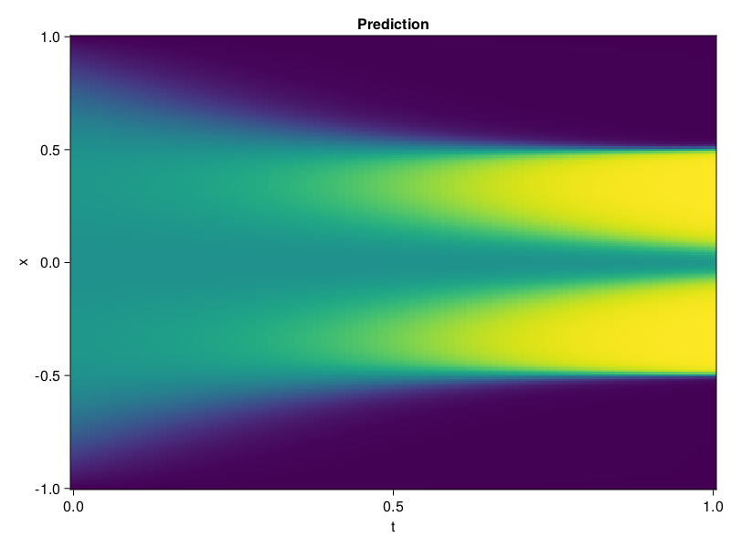

Allen-Cahn Equation with Sequential Training
In this tutorial we are going to solve the Allen-Cahn equation with periodic boundary condition from $t=0$ to $t=1$. The traning process is split into four stages, namely $t\in [0,0.25]$, $t\in [0.0,0.5]$, $t\in [0.0,0.75]$ and $t\in [0.0, 1.0]$.
using ModelingToolkit, IntervalSets
using Sophon
using Optimization, OptimizationOptimJL
@parameters t, x
@variables u(..)
Dₓ = Differential(x)
Dₓ² = Differential(x)^2
Dₜ = Differential(t)
eq = Dₜ(u(x, t)) - 0.0001 * Dₓ²(u(x, t)) + 5 * u(x,t) * (abs2(u(x,t)) - 1.0) ~ 0.0
domain = [x ∈ -1.0..1.0, t ∈ 0.0..0.25]
bcs = [u(x,0) ~ x^2 * cospi(x),
u(-1,t) ~ u(1,t)]
@named allen = PDESystem(eq, bcs, domain, [x, t], [u(x, t)])\[ \begin{align} - 0.0001 \frac{\mathrm{d}^{2}}{\mathrm{d}x^{2}} u\left( x, t \right) + 5 \left( -1.0 + \left|u\left( x, t \right)\right|^{2} \right) u\left( x, t \right) + \frac{\mathrm{d}}{\mathrm{d}t} u\left( x, t \right) =& 0.0 \end{align} \]
Then we define the neural net, the sampler, and the training strategy.
chain = FullyConnected(2, 1, tanh; hidden_dims=16, num_layers=4)
pinn = PINN(chain)
sampler = QuasiRandomSampler(500, (300, 100))
strategy = NonAdaptiveTraining(1, (50, 1))
prob = Sophon.discretize(allen, pinn, sampler, strategy)OptimizationProblem. In-place: true
u0: ComponentVector{Float64}(layer_1 = (weight = [1.6812041997909546 0.3556841313838959; 1.6613529920578003 -0.00614518066868186; … ; 1.4022681713104248 0.07606017589569092; 1.2872310876846313 0.393171101808548], bias = [0.0; 0.0; … ; 0.0; 0.0;;]), layer_2 = (weight = [-0.583034336566925 0.26329198479652405 … 0.43364399671554565 -0.49758419394493103; 0.28266456723213196 0.3143337666988373 … -0.4379904866218567 0.7212027311325073; … ; -0.28475093841552734 -0.22134912014007568 … 0.4130445122718811 0.5672792196273804; -0.5246798396110535 0.1646212488412857 … -0.17734123766422272 0.4162695109844208], bias = [0.0; 0.0; … ; 0.0; 0.0;;]), layer_3 = (weight = [-0.4765172004699707 -0.2998891770839691 … -0.3460640609264374 -0.7011684775352478; 0.03781437128782272 -0.1729787290096283 … 0.38301751017570496 -0.3012915849685669; … ; 0.2317565679550171 0.45914092659950256 … -0.02140817604959011 0.5915829539299011; 0.27007439732551575 -0.6938424706459045 … 0.13062015175819397 0.5504696369171143], bias = [0.0; 0.0; … ; 0.0; 0.0;;]), layer_4 = (weight = [0.11039181798696518 0.005510858725756407 … 0.3234456479549408 -0.5469407439231873; 0.11038072407245636 -0.39065971970558167 … 0.4341478943824768 -0.17022131383419037; … ; -0.6657553911209106 -0.11435677111148834 … 0.517520546913147 -0.5941812992095947; -0.1571020632982254 0.47495436668395996 … -0.037880100309848785 -0.5435413122177124], bias = [0.0; 0.0; … ; 0.0; 0.0;;]), layer_5 = (weight = [0.15305598080158234 -0.17088109254837036 … 0.2387702316045761 0.23997193574905396], bias = [0.0;;]))We solve the equation sequentially in time.
function train(allen, prob, sampler, strategy)
bfgs = BFGS()
res = Optimization.solve(prob, bfgs; maxiters=2000)
for tmax in [0.5, 0.75, 1.0]
allen.domain[2] = t ∈ 0.0..tmax
data = Sophon.sample(allen, sampler)
prob = remake(prob; u0=res.u, p=data)
res = Optimization.solve(prob, bfgs; maxiters=2000)
end
return res
end
res = train(allen, prob, sampler, strategy)u: ComponentVector{Float64}(layer_1 = (weight = [1.4729693074363928 1.1998584438147102; 1.6935285171166465 -0.19966092247252118; … ; 1.7488577471388913 0.3144270034654396; 2.65107670402198 0.6102299453761486], bias = [-0.3988521105114141; 0.24158744685230632; … ; -0.044069663721552334; 0.5640354458802158;;]), layer_2 = (weight = [-0.7458160403507695 0.40047190872755783 … 0.3496242971913162 -0.8304477041908855; 0.5361854514241263 0.3225154671981384 … -0.44194624629737955 0.5866436637434201; … ; 0.409911871931871 -0.18518044628786887 … 0.5690128327671717 0.9692680580114991; -0.8671237598174302 0.1248536927558346 … -0.18445967274075808 0.4548277261838018], bias = [0.2877382694462974; -0.36363727332309; … ; 0.2786900773732806; 0.10748112334088003;;]), layer_3 = (weight = [-0.2648672902586662 -0.6916868603673123 … -0.28067350900372806 -0.7137062449979046; 0.0030779193320905973 -0.06626204808418087 … 0.6080362852186353 -0.396102356388232; … ; 0.05226538951476931 0.025456894775529162 … 0.7453639510649419 1.0375493236138256; -0.06706203896325291 -0.9347068253006987 … 0.4567046943786534 0.12338953967025758], bias = [-0.05820526490781586; -0.05334395565879951; … ; -0.47589804297569577; 0.04109063587175455;;]), layer_4 = (weight = [0.04609595546343378 -0.03644477318559803 … 0.7367148533413193 -1.0746086656571863; -0.3002547428804455 -0.1381998283623369 … 0.3655299213272484 -0.08107275521934955; … ; -1.6291451168512716 -0.1551089130076065 … 1.2699112878012875 -0.16954181254466144; -0.11488792118646635 0.27443858048725456 … -0.10138856968106304 -0.5767575046878414], bias = [0.06948852022294845; 0.13654271181365668; … ; -0.01241081140080776; -0.4262515294837415;;]), layer_5 = (weight = [0.2736979416186564 -0.553995843387368 … 0.7828101671294021 0.17899828680495444], bias = [-1.02013123401957;;]))Let's plot the result.
using CairoMakie
phi = pinn.phi
xs, ts = [infimum(d.domain):0.01:supremum(d.domain) for d in allen.domain]
axis = (xlabel="t", ylabel="x", title="Prediction")
u_pred = [sum(pinn.phi([x, t], res.u)) for x in xs, t in ts]
fig, ax, hm = heatmap(ts, xs, u_pred', axis=axis)